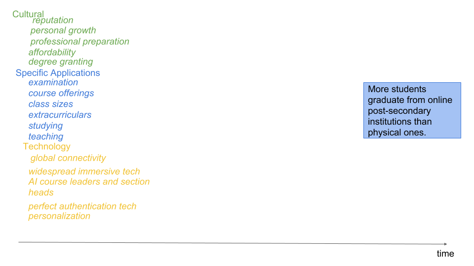
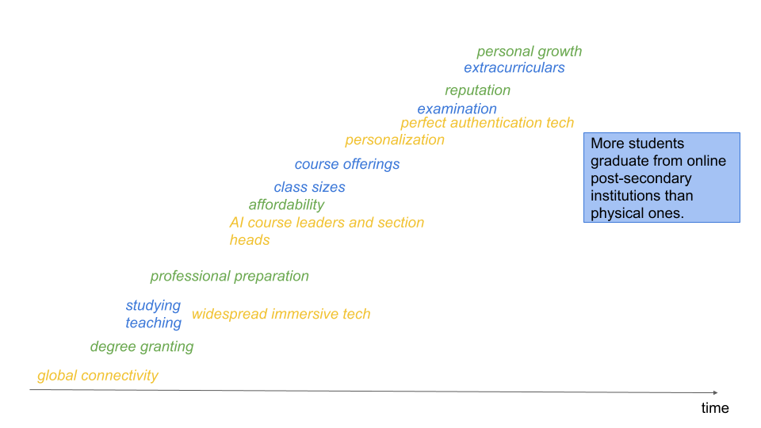
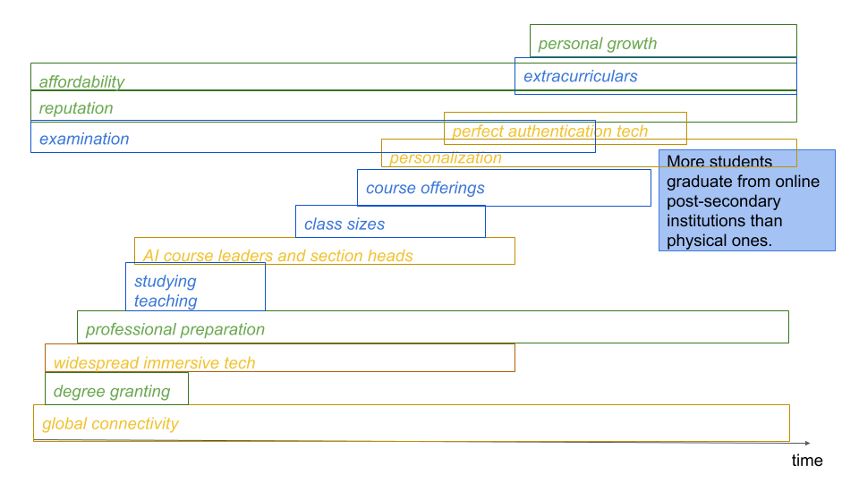
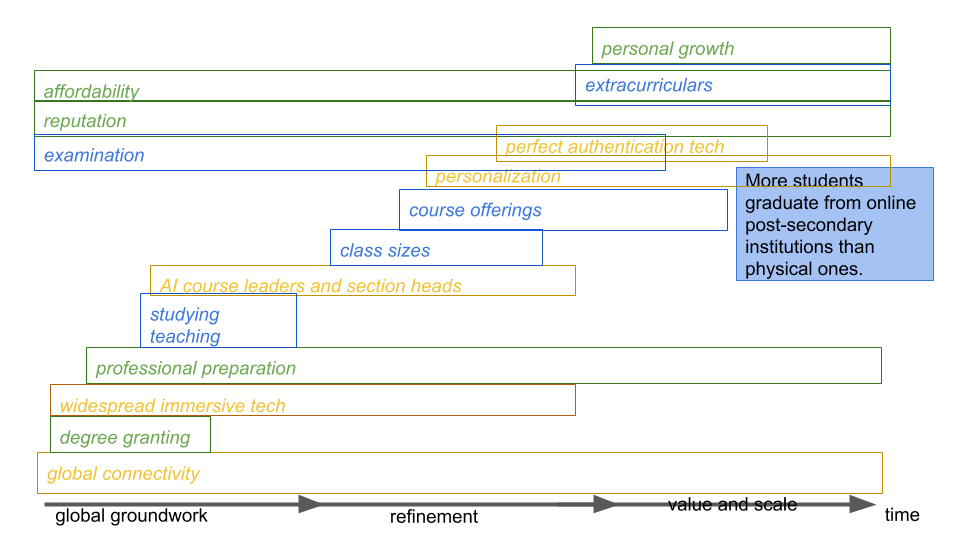
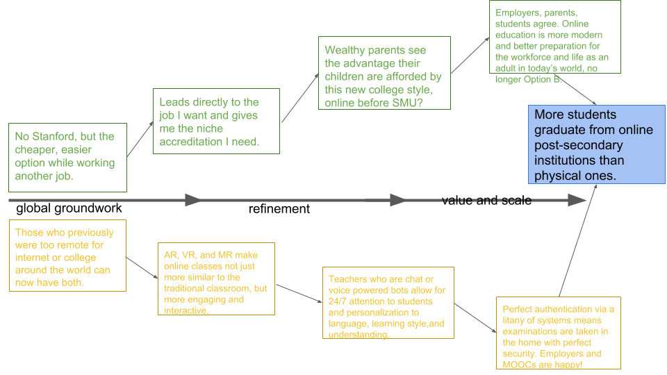

It seems inevitable that eventually, more students will graduate with postsecondary degrees online than from traditional institutions. But the questions remain: how, and when, will we get there?
The factors driving society towards this education future are largely cultural and technological. In a world with massive education disparities globally and even within individual countries. Colleges are incredibly expensive and fees are rising exponentially. Top schools are incredibly selective and often require full time attendance. In a world where prices are falling and flexibility is on the upshot, college educations are an outlier. But likely not for long.
FORCES AT PLAY
ORDERED IN TIME
RANGES VERSUS EVENTS
QUALITATIVE TIMELINE ADDED
HYPOTHESIZED, REPRESENTATIVE EVENTS
2012 saw the year of the MOOCs, as Coursera, edX, and Udacity were all launched. These organizations are working towards this online-education based future, but there are a couple of roadblocks in their way that will eventually be removed, as well as events that will drive positive progress. First, global access to internet and technology is increasing quickly. Those who are limited enough financially to not have access to internet or devices already will be a key market for online education and increase the volume of students working towards degrees online. Furthermore, though this increased volume won’t remove any students from physical institutions directly, the blazing of this path is sure to inspire other students to follow in the same path.
As AR, VR, and MR, become more popular and accessible to the everystudent, this trend will also drive education towards the online. When the classroom experience is a mere headset away and pausable at any time to allow students to hold employment or or responsibilities while also earning their degree. This will be particularly impactful on the trades, where physical education is needed but machinery can be replicated anywhere via VR. This will also simply enhance the experience of online education and remove many of the advantages that physical institutions currently hold for both engagement and learning.
While many students are excited about online courses, massive issues presently exist in the lack of personal attention that is given to students, especially when courses are taken at the scale of an entire degree. As chat and voice bots continue to become more and more advanced, online education providers will be able to provide scalable, individual attention to all students to improve their learning, comprehension, and likely grades. This attention will likely quickly outpace that which is available to students in traditional institutions, where human professors and TAs have limited time, and will also draw students into the increasingly high-touch, high-personalization ways of online education.
Another current issue with online courses is the lack of verification that can be given in examinations. While some MOOCs offer in person exams, this is not feasible for large scale growth, especially when target markets for online degrees include those who live in remote areas. Thus, as authentication technologies improve and employers are more comfortable accepting these accredited degrees from applicants, online courses will prove a move viable and exciting option for many students.
On the cultural side of this impending shift, online courses do much to provide any student globally with access to niche educations they may not find nearby, in their country, or even on their continent. Online education does not discriminate based on geography, language, gender, or age, and thus is also socially and emotionally more accessible to many potential and even current traditional students. With these niche educations often leading to a unique advantage and strong job prospects, it seems likely that wealthier and wealthier families will encourage their children to attend - both for the personal attention and higher prospects of employment than they might face coming out of a liberal arts degree at a smaller, less known college. Especially when anyone (at least at present) can be admitted or simply just enrol in these online programs, they are much more accessible that selective, top-tier universities and may provide similar options post-graduation.
As student populations increase, online education providers will have growing resources, and likely growing pressure, to institute programming to create opportunities for student growth outside of the classroom, whether this be through extracurriculars, group discussion, webinars, or any other community activity. As this component grows, and schools begin to become more competitive with each other, reputations will be built and online degrees will become even more directly comparable to those of traditional institutions in the eyes of both students and parents. Meanwhile, this will still all be optional and those who wish too would likely be able to attend without this extra investment of effort. With this, as technological barriers fall and societal changes incentivize, the next century will likely see a world in which more students graduate from online postsecondary institutions and not traditional, physical universities.
Here is what people are saying about AMA University
I wonder: as the scale of a MOOC grows, what new forces will be at play to weight it down?
Cool site, I'll check back next week.
The wonderful people taking this class with you!